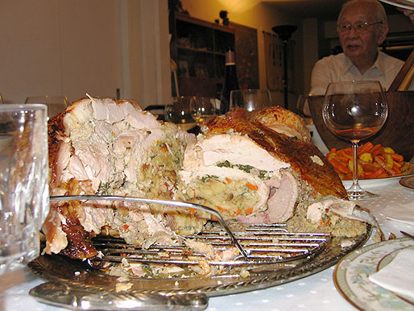
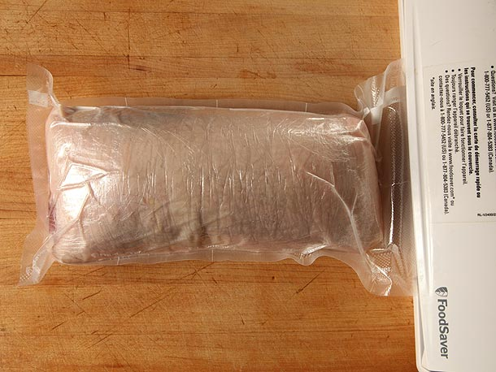
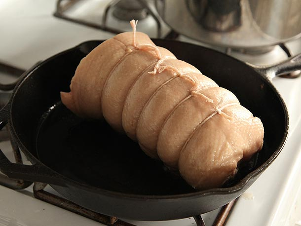

The Food Lab: How To Make The Ultimate Turducken
Posted by J. Kenji López-Alt, November 7, 2012 at 5:30 PM
[Photographs: J. Kenji Lopez-Alt]
It's time for another round of The Food Lab. Got a suggestion for an upcoming topic? Email Kenji here, and he'll do his best to answer your queries in a future post. Become a fan of The Food Lab on Facebook or follow it on Twitter for play-by-plays on future kitchen tests and recipe experiments.
Ever since I was a wee little cook ripping up my first chives, burning my first steaks, and toughening up my first squid, I'd dreamt of poultry-stuffed-poultry-stuffed-poultry. The idea of a Turducken—a chicken stuffed into a duck stuffed into a turkey—is just so damn appealing. How could three such glorious birds not taste all the more glorious together?
Kirby-esque visions of ducks sucking up whole chickens, acquiring their powers, only to be sucked up by a turkey to create one mega-bird danced through my eyes. I could taste their fats co-mingling on my palate.
The history of the turducken is relatively modern. Some attribute it to Paul Prudhomme, the legendary Louisiana chef who also brought us blackened fish, while others say it was first made at Hebert's Specialty Meats, also in Louisiana, but all place its time-stamp at somewhere in the 1980's. But as a concept, animal-stuffed-animal roasts have a pedigree that reaches back at least to Roman times, when roasts could use as many as two dozen different beasts of ever decreasing size. How romantic.
Part of the appeal is the surprise. A perfect turducken should arrive at the table looking just like a regular old turkey. It's only upon carving that guests are given the first clue: rather than trying to navigate the confounding curves of a breast bone, a carving knife slides cleanly, smoothly through the entire boneless wonder, exposing the layered meat and stuffing within.
I so wanted to make one, so make one I did.
The dream all came crashing down within the first few bites.
Sure, that turkey-esque beast looked impressive on the table, its misshapen sides bulging out like uncooked bagel dough, cornbread and sausage stuffing comingling inside with no attention paid to the boundaries the various birds were supposed to be setting up in there. But there was no way that even the most optimistic of holiday feasters could have pretended it was as tasty as roasting each of the birds individually.
Here's a picture of what the Food Lab was doing, circa 2004:

Gorgeous, right? Grandpa in the back is keeping mum.
The turkey was dry as a bone, the duck skin completely unrendered, fatty, and chewy, the flavors a mish-mash of competing ingredients. I, along with my entire family, ate the thing, smothered in gravy, washed down with plenty of red wine and hubris.
I chalked it down to poor preparation, and spent the next couple of years trying to perfect my technique—cooking at a lower temperature, trussing and stuffing more carefully—but kept the same basic method intact. Things never got significantly better.
Then, in 2007, I came to an even more shocking realization after tasting every major brand of mail-order turducken available: They were all dry.
Here's are the basic problems with turducken:
- Dry turkey and overcooked duck. Poultry needs to be cooked to between 140°F and 150°F*. Below that, and it's got a mushy texture and is dangerous to consume. Let it heat up above that, and it dries out irretrievably. How do you cook a chicken in the very center of a duck and a turkey to 140°F without overcooking the turkey or duck? You don't. In every recipe I tried, the turkey ended up hitting upwards of 170°F by the time the chicken was cooked through.
- Misshapen appearance. It's not easy to wrestle with three birds and three layers of stuffing. No matter how carefully you truss or tie, it ends up kind of... blob-like. Rather than opening neatly when sliced, it sort of spills out, as it the turkey skin were a sand-stuffed ballon.
- The duck skin is too fatty. As water-dwelling creatures, ducks have a ton of fat for insulation. Duck fat doesn't start to render until well above the temperatures that you want to cook either duck or turkey meat to, which means that once it's stuffed inside the turkey, it stays there, rubbery, fatty, and unappetizing.
- The flavors are muddled. Three birds, three different stuffings (one in the chicken, one between the chicken and duck, one between the duck and turkey), it's impossible to get a clear, clean, flavor out of the chimeric beast.
*The USDA recommends significantly higher temperatures for roast poultry, but given proper resting, 150°F is perfectly safe.
My goal for the last few years has been to try and solve every one of those problems. This year, I finally succeeded, producing what is perhaps the finest roast to ever emerge from my oven. Turkey meat that gave its juice away freely to anyone who asked. Perfectly rendered duck fat, tender to the teeth. And flavors that blended as harmoniously as robotic lions joining forces to save the universe.
Here's how it's done. (Click here for a step-by-step slideshow).
The Basics: Boning Birds
The most difficult part of a turducken is boning out all the birds. With the chicken and the duck, this means removing every single bone while still keeping the skin in one intact sheet. Seems like an impossible task, but it's in fact remarkably simple once you get the hang of it.
The key is to realize that you barely use a knife at all. The knife is used to remove the wish bone, to slit the back, to cut the joints at the wings and thighs, and to scrape meat from the leg bones. That's all. Everything else is done by hand.
The turkey, on the other hand, should have its leg and wing bones left in so that it still looks like a turkey after it's roasted, like this:
For full step-by-step details on how to do it, just check out the slideshow here.
Once all that's done, we come to the question of stuffing.
The Stuffing
Classic New Orleans-style recipes call for three different stuffings in the birds. There's no strict rule as to what they are, but they usually involve a cornbread stuffing, a rice stuffing, and an oyster-based stuffing. I've tried all of those, as well as a classic sage sausage bread-based stuffing, one with dried fruits, and a few other variations in between.
At first, I thought the problems with the stuffing were limited to simply balancing flavors—a tough task in and of itself. Eventually, I realized that the stuffing was part of the problem when it came to the structural integrity of my roast.
See, while meat is made of strongly interconnected proteins that set into shape as you cook them, stuffing has no such shape-holding power. Even in a fully roasted turducken, that stuffing is soft and malleable, causing the bird to deform (and therefore cook unevenly), and looking totaly unattractive as it spills out onto the cutting board upon carving, like a late night partier reacquainting himself with his dinner on the sidewalk.
So if a grain-based stuffing is the problem, why not just switch to an all-meat stuffing? Forcemeats like sausage or pâté are common stuffing choices in classical French preparations (like galantines or ballotines) for this very reason.
Swapping out my bread stuffing for sausage (I used bulk sage sausage) was a huge step in the right direction, instantly solving my flavor issues, though initial shaping of the bird was still not particularly easy.
For now, I decided to move on to getting the darn thing to cook evenly.
Even Cooking
The thing with roasts—and I apologize if you feel this is too obvious to even be worth mentioning—is that they cook from the outside in, and gradually approach the temperature of their surrounding environment.
This means that in a turducken placed in a 350°F oven, the turkey will always be closer to 350°F and therefore hotter than the chicken in the middle. Lower the temperature a little bit, and that differential between the chicken and turkey is reduced. Follow this to its logical extreme by cooking the turducken at the exact temperature you want to serve it at—in this case 145°F—and you can eliminate that temperature differential entirely. The chicken will be the exact same temperature as the turkey
But this poses a problem: It takes a long, long times for a big roast to equilibrate in a lower temperature oven. We're talking 12 to 16 hours at 150°F here, folks. That's a major commitment.
What's worse is that it's not safe. While a large, single piece of meat like a prime rib roast is clean and sterile on the inside and can thus be cooked low and slow with little to no risk,** this is not the case with a turducken: dangerous bacteria on the surfaces of the inner birds or in the sausage are trapped in an almost ideal environment for bacterial growth. I'm not squeamish when it comes to food safety, but even I'm not brave enough to eat 12 hour incubated chicken.
I'd have to find a better way.
**I advocate the method here

Then it occured to me: if I wanted the inside to reach its final temperature at the same rate as the outside, why not just cook it from the inside out? The unique three-tiered structure of a turducken allows you to do exactly that.
Rather than stuffing a raw chicken into a raw duck into a raw turkey, this time I stuffed my chicken with sausage, and sealed it in a cryo-vack bag (I've used butcher's twine nearly as effectively). I then proceeded to poach it in warm water until the very center of the stuffing hit between the 140 and 145°F mark. I then immediately and rapidly stuffed the still-warm chicken inside the boned duck.
The par-cooked, sausage-stuffed chicken stays firmly in shape and is easy to handle, making wrapping the sausage-stuffed duck around it a relatively simple task (made even simpler if you use a plastic-wrap sling to help shape it). From there, the process is repeated—the chicken-wrapped-duck is vacuum-bagged (or trussed), and poached until the duck cooks through.
The great thing is that because the chicken is already warm when it goes into the duck, it stays that way as the duck cooks. You really only need to wait for the duck's stuffing to come up to 140 to 145°F, and ensure that the chicken and sausage in the center doesn't dip below 130°F during that process (there was not even a remote threat of this happening any time that I tried this method).

I zipped my poached ducken up inside my turkey (for this layer I skipped the sausage stuffing, since the turkey was already pretty full as-is), sealed the sucker with skewers (far easier than the awl-and-kitchen-twine method I've attempted in years past), trussed the turkey, and roasted it until the skin was a golden brown, and the turkey meat was at 145°F, again monitoring to ensure that the duck and the chicken stayed amply warm to avoid any danger of nasties breaking about (about 130°F).
The result was a burnished beauty that emerged from the oven looking just like a regular roast turkey, but revealing layer after layer of perfect cooked meat inside.
But one problem still remained: that confounded flabby duck skin.
Fortunately, this time I knew exactly what to do:

Just fry off the duck before wrapping it in the turkey. A good fifteen minutes worth of rendering and browning inside a skillet resulted in duck skin that was not only thin and completely tender, but also added some great flavor to the mix. It was so beautiful as-is, that I was almost tempted to serve the crispy ducken as a smaller roast in and of itself.
I'm now tempted to develop a recipe for a miniature Duck "Porchetta".
Added bonus: plenty of rendered duck fat to fry your potatoes in.
With that final tweak in place, I finally had it. This year, my Thanksgiving table is going to be graced with the ultimate Thanksgiving roast. A three-bird, four-beast, hedonistic extravaganza that not only looks and sounds impressive, but eats better than any turkey, duck, or chicken you've ever had.
I'm not going to lie: it's not a quick project, and it takes a bit of practice. Your first turducken may have some issues with its figure or internal alignment. But nail this recipe, and you will forever be known in your family as the king (or queen) of the holiday table.
Now, go get stuffing.
Get The Recipe!
The Ultimate Turducken »
Step-By-Step slideshow on How to Make The Ultimate Turducken »
About the author: J. Kenji Lopez-Alt is the Chief Creative Officer of Serious Eats where he likes to explore the science of home cooking in his weekly column The Food Lab. You can follow him at @thefoodlab on Twitter, or at The Food Lab on Facebook.
1 of 61
Triple play
When sliced, every diner should receive a piece that contains some chicken, some duck, some turkey, sausage stuffing, and crisp skin.
2 of 61
Everything you need
De-boning a bird is easier than it sounds. All you need is a sharp boning knife (or a short chef's knife or paring knife will do), a bird, and some clean kitchen towels to hold it with.
3 of 61
Remove the wing tips
Start by cutting off the wing tips between the joint. (Skip this step for the turkey).
4 of 61
Locate the wish bone
Next, locate the wish bone by pulling back the skin on the breast around the neck until you can feel the V-shaped bone just under the surface of the meat.
5 of 61
First incision
Make your first cut on one side of one branch in the wish bone. Repeat on the other side of the same branch, then make two more cuts on the opposite branch. This should loosen it completely.
6 of 61
Remove the bone
Remove the wish bone by pulling it out with your hands. A kitchen towel can be used to get a better grip.
7 of 61
Slice open the back
Your next cut is straight down the backbone. Cut firmly and deeply, letting your hand press against the vertebrae to ensure the skin is completely split.
8 of 61
Fine the wing joint
Pull back the corners of the skin like you're opening the collar of a shirt and feel for where the wing meets the body (there should be a ball joint there).
9 of 61
Remove the wing
Use your knife to cut through that joint just until the wing bone pops out. Do not slice any more than is necessary. With ducks and turkeys, there is also a larger collar bone attached to the same joint that can be easily pried from the body.
10 of 61
Repeat on the other side
Cut through the second wing joint as well.
11 of 61
Grab the wing
Holding the chicken's neck firmly with one had, use the other to grab the entire wing.
12 of 61
Pull
Pull down on that wing and the meat should start to separate from the back and the breast bone on its own. Use your finger to pull through any stubborn connective tissue. With the turkey, you may need to use just the very tip of the knife to cut through tough connective tissue. Continue pulling down until the oyster—the dark muscle where the thigh meets the backbone—is exposed.
13 of 61
Repeat on the other side
Repeat with the other wing. The breast should now be half hanging off the front of the bird.
14 of 61
Use your fingers
Stick the index finger and middle finger from one hand into the space between the breasts and the breast bone, using the other to hold the back firmly. Pull down and out to separate the breast meat from the bone. (The tenderloins will stay attached to the bone for now—this is okay).
15 of 61
Continue pulling
Keep pulling on the breasts until they are completely separated from the carcass. The only thing holding the carcass in place now is the thigh joints.
16 of 61
Locate the thighs
Turn the chicken so its back is facing up, then carefully cut through the oyster to expose the thigh joint.
17 of 61
Grab the leg
With the oyster separated, grasp the entire leg and bend it in towards the body while simultaneously lifting it upward. This motion should cause the ball joint to pry out of its socket.
18 of 61
Cut through the joint
Once it pops out it's easy to see what little connective tissue needs to be cut through to release it entirely.
19 of 61
Repeat and remove
Repeat with the other side, then pull the carcass away from the meat entirely.
20 of 61
Semi-boneless poultry
If you're on the turkey, you're done! For the chicken and duck, the remaining bones must be removed. Read on.
21 of 61
Take the tenderloins
Remove the tenderloins from the carcass by running your thumb under them.
22 of 61
Pull it off
Once it's loosened, the tenderloin can just be pulled off. No knife necessary. They should pop right out. If you want, you can remove the tough ligament that runs through them by grasping it with a kitchen towel, then scraping your knife along its length. The meat should come off, leaving the ligament in your hand.
23 of 61
Sweep the leg
To remove the leg bones, start by grabbing the inner end of the thigh bone and using the hilt of your knife to scrape away meat. It should come off cleanly.
24 of 61
Cut around the joint
When you reach the knee, you'll need to cut a few bits of connective tissue. Work your way around the knee systematically until it's all clear.
25 of 61
Continue scraping
Keep scraping until the leg bone is also clean.
26 of 61
Crack the ankle
You can try and cut the leg bones out completely, but easier is to just crack the bone at the ankle with a heavy knife or cleaver, then cut through the skin, discarding the end of the bone. The leg and thigh bones should then easily slip right out.
27 of 61
Remove the wing bones
To remove the wing bones, lift them up and rest the end against the cutting board. Press down on the meat and skin around it firmly.
28 of 61
Pull it out
The bone should pop right out.
29 of 61
Re-align the tenderloins
Place the tenderloins in the space between the breasts and the legs to create a more even layer of meat.
30 of 61
Butterfly the breast
Similarly, butterfly the top of the breast and fold it towards the center to even up your meat.
31 of 61
Almost done
The breast section should look like this.
32 of 61
Season evenly
Season the chicken evenly and liberally with salt and pepper on all sides.
33 of 61
Add sausage
Spread a layer of sausage over the surface of the bird.
34 of 61
Roll one side
Carefully roll up one side, then...
35 of 61
Roll the other
...roll up the other, letting the skin overlap to form a good seal.
36 of 61
Ready to poach
Looks almost just like a real chicken, right?
37 of 61
Wrap in plastic
To help keep its shape, you have a few options. You can wrap it in plastic...
38 of 61
Cryovack
...you can cryovack it, or you can just truss it with string. Any method will work.
39 of 61
Poach
I poach my chicken gently, starting it in lukewarm water that I then bring up to a subsimmer before reducing the heat to the lowest setting.
40 of 61
Use a thermometer!
Use a thermometer to check the internal temperature. You are looking for between 140°F to 150°F (I prefer it cooler, though if you want slightly firmer meat, go hotter).
41 of 61
Duck's turn!
Here's the duck, already boned out, ready to receive a nice hot chicken injection.
42 of 61
Ready to wrap
The duck is seasoned with salt and pepper, the sausage is spread, and the hot chicken is placed directly along its center, all on top of a sheet of plastic wrap.
43 of 61
Start wrapping
Use the plastic wrap as a sling to lift one side of the stuffed-duck over the chicken.
44 of 61
Easy peasy
The plastic wrap makes it easy to get the duck into an even layer. Repeat with the other side. Again, you can wrap tightly in several layers of plastic, truss with twine, or...
45 of 61
Cryovack
...use the cryovack to secure your bird.
46 of 61
Re-truss after poaching
After poaching the duck just as you did the chicken, take it out of the bag (if you used one), and tie it up. We're about to sear it.
47 of 61
Start searing
Place the duck in a medium hot skillet with a little bit of oil and cook it until golden brown and crisp on all sides. This ensures that there's no flabby skin inside the roast when it's cooked.
48 of 61
Ready to stuff
If you really can't resist, you can go ahead and eat some of this guy right now. Looks tasty, don't he? Either way, trim off the end of the ducken so that it just fits the length of your turkey breast.
49 of 61
Turkey
Place the turkey on your board skin side down and season it with salt and pepper.
50 of 61
Add your ducken
Place the ducken right down the center (after removing the twine, that is).
51 of 61
Fold 'er up
Close up the turkey, allowing the skin to overlap on the back.
52 of 61
Keep it in place
Use skewers to start trussing up the back.
53 of 61
Ready to flip
Once the back is secure, it's ready to be seasoned and placed in a roasting pan. Rub it all over with some oil and season with salt and pepper.
54 of 61
Start trussing
Trussing the bird will give it a better shape and expose the legs to more browning. Start by placing a long piece of kitchen twine under the breast bone.
55 of 61
Pull back
Pull it back and wrap it around the breasts, tucking it into the wings.
56 of 61
Pull it foward
Pull it back around towards the legs, cross the strings, and wrap them around the ankles.
57 of 61
Hog tied
Wrap around the ankles a few times, the tighten it up and tie it off. Roast in a preheated 425°F oven until the turkey registers 145°F in the breast and 165° in the thighs, about 1 1/2 hours.
58 of 61
Ready to carve
It should emerge from the kitchen golden brown, crisp, and looking just like a regular turkey.
59 of 61
Remove the legs and carve
Carve it by first removing the legs and wings, then splitting the body in half lengthwise, revealing its layered interior.
60 of 61
Slice and serve
Lay each half flat against its cut side, then slice and serve.
61 of 61
Ready to eat
Your family will pat you on the back. I swear it.
{kind=link}
Comments (52)
Add a Comment